Two Clocks：RLVR 大批量为什么学得更慢，却按样本数准时失效
- 论文：Two Clocks: Why Larger Rollout Batches Learn Slower but Fail on Schedule in Reinforcement Learning with Verifiable Rewards
- 作者：Yuante Li、Junwei Quan、Kai Qiu、Kate Zhang、Yicheng Tao；前两位共同一作。
- 机构：卡内基梅隆大学；合作机构：多伦多大学。
- 首次公开：2026-10-13 17:58:57 UTC；北京时间 2026-10-14 01:58:57。
- 论文入口：arXiv:2610.18853。全文版本：v1，19 页；阅读日期：2026-10-15。
- 代码状态：作者提供 GitHub 入口，本轮访问失败，未核验独立仓库内容；不据此宣称实现或复现实验已经可用。
1. 背景和问题
平方根学习率规则保持每个样本积累的一阶策略漂移，却不保持这段漂移带来的学习进展。
这句话对应论文引言的中心论点。可验证奖励强化学习的昂贵环节是模型自己生成训练回答：数学题的答案可以按规则判定对错，但每次策略变动后，后续训练所需的回答也必须跟着重新采样。因此，节省人工标注没有消除生成成本。工程上常见的应对是放大一次生成的批量，尽量填满推理设备，并在策略更新前收集更多回答。问题随即转化为：批量变大后，怎样调学习率才能继续沿着原先的学习轨迹前进？平方根规则给出一个很方便的迁移方式，即批量增大若干倍，学习率乘对应的平方根。不过“方便迁移”包含不同承诺，不能把参数位移接近、准确率接近、失效时间接近和墙钟耗时接近混成同一件事。
论文关注的是一次生成之后进行多步更新的实际训练形态。一次 rollout 含多个提示，每个提示又采样一组回答；收集完这些回答后，把它们拆成若干优化器小批量，顺次更新模型。第一步时，当前策略和生成策略一致；第二步开始，模型已经更新，继续使用的却还是旧策略生成的数据。重要性比率因而偏离一，PPO 风格的比率裁剪开始影响梯度。这种“先生成一批，再逐段训练”的模式既能摊薄生成成本，也把优化批量、数据陈旧程度和裁剪保护绑在一起。作者以 GRPO 的多步设置为对象，试图把这些因素拆开，而不是给所有后训练方法提供统一的批量定律。
在这里，“学得更慢”有严格的横轴：消耗的回答数。假如两个配置生成相同数量的回答，小批量配置已经达到某个准确率，而大批量配置尚未达到，那么大批量的样本效率更差。它未必每小时做得更慢，因为更多并行生成可能提高设备利用率；它也未必最终准确率更低，因为先跑得快的配置有可能在训练后段崩溃。论文标题刻意将进展时钟与失效时钟分离，正是为了避免单看最终点位作出错误解释。这里的样本单位还是整条回答，回答长度的变化会改变实际令牌成本；同样的回答数既不等于同样的总令牌数，也不自动等于同样的 GPU 小时。
作者观察到三件同时发生的现象。其一，按照平方根规则放大批量，多步 GRPO 的准确率曲线不能在样本横轴上保持重合；超过某个范围后，大批量需要更多回答才能达到相同目标。其二，关闭比率裁剪后，大批量虽然执行的优化器步数远少于小批量，却会在相近的回答数量附近失效。其三，恢复裁剪对大批量的保护更加明显，大批量可以在同样预算内保持稳定，而小批量仍可能后期下降。这三件事看起来矛盾：既然更大批量没有让模型更快学好，为何失效还按同一时间表出现，又为何裁剪看上去更“照顾”它？双时钟模型的解释是，策略持续移动的速度、移动转化为目标改善的效率以及阻止不稳定移动的保护，分别对应不同变量。
与既有批量理论相比，这篇论文特别强调学习率是否重新调优。经典的临界批量讨论通常在每个批量上寻找合适学习率，此时临界尺度与梯度噪声有关。而本文是在选定小批量学习率后，严格沿平方根规则迁移到其他批量，学习率不能再自由选择。因而，即使所有优化器批量都远低于测得的梯度噪声尺度，也可能出现明显的样本效率损失。这提醒我们，知道梯度非常嘈杂，并不意味着可以放心把批量一直放大；如果同步抬高学习率，曲率引起的损失也会随之增加。噪声尺度与本文的进展临界批量不是两个可随意互换的名称。
这项工作值得阅读，还因为它没有把裁剪直接视为“限制学习”的坏因素。少量令牌被裁剪，可能携带很大比例的梯度；去掉这些令牌确实会改变更新方向，却也可能推迟崩溃。判断裁剪是否有效，应同时看早期进展和持续稳定性。在作者设置里，放宽裁剪能让大批量早期爬升更快，后期却开始衰退，部分随机种子发生失效。比较训练方案时，只截取早期收益会夸大改动的效果，只看最终点则会掩盖样本效率差异。本文的数据安排把这两种常见误读放在同一组控制实验里，使“前期小批量、后期大批量”的调度思路具有具体的证据来源。
还应预先明确解释的层级：进展规律来自局部二次损失、噪声主导归一化等近似；失效规律另外引入了漂移达到阈值的经验假设。作者没有直接测量整个训练过程中所有曲率，也没有证明所有参数方向都存在相同失效边界。后续实验是在检验这些近似的可观察预测。阅读时应把它作为分析与试验设计框架，关注哪些假设在自己的训练配置中成立，不能把“相近样本数失效”当成适用于所有模型的物理常数。
2. 方法
2.1 GRPO 设置与双时钟的计量单位
输入是一批提示以及当前生成策略，输出是回答、规则奖励和接下来用于更新的组内优势。每个提示采样同样数量的回答，通过组内均值与标准差，把二元奖励转成优势；对一条回答的各个令牌再计算当前策略与生成策略的概率比率。为了看清批量的含义，先把两个批量和平方根规则并列写出：
符号解释：$P$ 是一次 rollout 的提示数，$G$ 是每题的回答数，$B_r$ 是整批回答数，$\mu$ 是拆成的优化器步数，$b$ 是每一步实际看到的回答数。固定 $\mu$ 时，对 $B_r$ 做平方根缩放与对 $b$ 做缩放等价；改变 $\mu$ 后却不能直接套用同一个系数。论文控制实验还改变了每次 rollout 的步数，因此“批量从五百变四千”必须同时注明是生成批量还是优化器批量。$\kappa$ 是按优化器批量平方根归一化后的学习率，而不是新的动态控制器。 组内优势与用于说明裁剪机制的目标项可以写成：
$r_i$ 为零或一，$\epsilon$ 只用于数值稳定；实验按令牌平均上述 DAPO 项，并在负优势上加入系数为十的双重裁剪。正优势令牌的比率往上界移动、负优势令牌往下界移动，才会进入使有利方向梯度归零的裁剪区域；不是所有“超出区间”的令牌都以同一种方式消失。第一步比率严格为一时，裁剪不能起作用，单步 rollout 因而提供了非常重要的控制组。训练之后用于验证的模型只生成回答并接受对错评估，不存在这种组内梯度与裁剪过程；双时钟讨论的是学习轨迹，不是推理时的解码新算法。
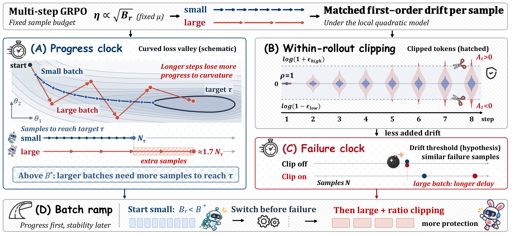
Figure 2 将理论与调度放在一张原始机制图里。左上部分把小批量与大批量画成沿同一弯曲谷底移动的两条路径：平均一阶漂移相同，大批量却用更少、更长的更新覆盖这段位移，每步偏离局部有利方向的代价更大，因此到同一目标所需的回答数更高。右上部分是一次 rollout 内的比率传播，第一步以一为起点，后续更新逐渐把令牌的对数比率推向两侧边界，斜线部分表示被裁剪的贡献。右中部分明确把失效阈值标成假设，展示无裁剪时相近样本数失效，以及大批量从裁剪得到更长延迟。底部才给出调度：先用低于临界尺度的批量获得进展，在小批量失效之前切换到更大的批量并保留裁剪。图中的示例比例是帮助理解机制的概括，不能把画出来的弯曲谷底当成实测神经网络损失面，也不能把每一条示意曲线当成准确率实验。它的作用是连接同一阶漂移、不同进展损失与不同保护强度三件事，并提示后面的实验必须分别验证每一环，而不是从一幅总图直接得到完整因果证明。 进一步沿箭头读，左上比较的输入是相同回答预算与对应缩放学习率，输出是达到目标所需样本的差异；右上的输入则是同一轮内不断变化的当前策略与固定生成策略，输出为令牌比率的扩散和被截断贡献，两处横轴并不相同。正负优势标记说明裁剪按有利方向选择贡献，而不是一律禁止离开区间；因此它改变的既有幅度也有方向。右中箭头所表示的保护只是推迟到达阈值，不是每轮重新清空累计位移。底部蓝色到红色的切换把两个时钟的作用顺序化：先利用低曲率损失的进展阶段，再利用裁剪更强的稳定阶段。是否真能获得这种分工，还取决于切换前是否已经积累足够学习收益，以及切换是否发生在小档失效之前。
2.2 局部曲率产生的进展时钟
作者从一个优化器小批量的梯度估计开始：总体梯度加上零均值噪声，噪声协方差与批量成反比。主文使用标量的 Adam 类型归一化，把真实 Adam 的逐坐标行为留到附录讨论。 最后一个近似是噪声主导假设，需要 $b$ 远小于简单梯度噪声尺度，而不是由 Adam 的名字自动保证。此时分母随批量平方根倒数缩小，学习率又随平方根增大，两个因素共同让平均一步位移随批量线性增长：
每个样本的持续漂移 $d$ 因而不变。消耗固定回答数的大批量配置步数更少，恰好抵消每一步更长的均值位移。但是损失变化还有 Hessian 二次项：一步走得越长，曲率惩罚不是线性增长；这正是仅看一阶位移会遗漏的部分。把期望损失变化除以每步消耗的回答数，得到：
$r(b)$ 是每个回答带来的期望损失下降；$H$ 是局部 Hessian。第一项代表沿总体梯度的线性收益，第二项代表噪声经曲率带来的损失，两者均不随 $b$ 改变；只有平均步位移对应的曲率项随批量增加。要从中推出“大批量进展更慢”，还需要梯度方向曲率为正以及整体净进展为正。附录的推导是单步局部展开，讨论一段训练时又把梯度、噪声与曲率当成变化相对缓慢的量；这不是把非凸训练全过程都简化成严格凸二次函数。 对达到某个目标所需的损失改善量，进一步作一阶展开，并将优化器批量换回 rollout 批量：
$\tau$ 是准确率目标，而理论先推损失下降，再用相同形状拟合样本成本；这种连接是经验建模的一部分。展开要求净进展基线为正，而且批量相对于临界尺度足够小；超出这个区间后，作者把这个表达式用作拟合形式。临界尺度中显式出现 $1/\kappa$，因此沿着更激进的学习率族，它可能下降到远低于噪声尺度的地方。它也不是“超过就必然立即崩溃”的边界，只是样本效率开始明显恶化的尺度。失效的阈值属于另一个时钟。 对拟合形式取对数导数，还有一个便于比较实验的量：
$\alpha$ 为零意味着放大批量基本不增加达到目标所需的回答数，接近一意味着成本越来越接近步数受限的极端。实际表格里的指数由有限批量和多个目标共同估计，不是每个点都精确满足导数形式。附录还指出，在大批量不再由噪声主导时，归一化不能继续按平方根倒数近似；逐坐标 Adam 又可能把各方向噪声和曲率重新加权。这些边界限制了从少量曲线反推全局临界批量的可信度。
2.3 漂移阈值假设产生的失效时钟
进展时钟说明“同样移动不等于同样改善”，却不能凭此推断模型何时崩溃。作者额外假设，在总体梯度方向变化较慢的区间，平均更新沿近似同一方向积累；累积位移到达某个阈值 $D$ 后运行失效。在这个假设下，步数乘上每步的平均漂移达到阈值，再换算为回答数：
这就是沿平方根规则改变批量、却不显著改变失效样本数的预测。阈值 $D$ 以及梯度与噪声并未在全程保持严格不变，因此常数 $C$ 需要结合实验估计。公式给的是条件性尺度关系，不是把未来失效精确预测到某一个回答的装置；换模型后常数也可能变化。对实际系统，应把它当作建立控制实验的线索，并保留误差范围与未失效样本的删失信息。
只观察到样本失效点不随批量变化，还不能区分漂移失效与随机游走失效。噪声驱动的备选机制会给出样本数正比于批量、反比于学习率平方；沿平方根规则，它同样抵消批量依赖。真正有区分力的是另外改变学习率并估计其指数。作者因此拟合批量指数与学习率指数，而不是只画一组平方根缩放的曲线。完全忽略批量、仅由学习率决定失效的第三种备选，沿平方根规则预测大批量更早按样本数失效，也可以被这一设计区分。这种“让不同解释产生不同预测”的实验组织，比单独观察一对曲线更加重要。
2.4 rollout 内裁剪与批量渐增调度
对生成回答的策略固定不动，当前策略经过若干步更新后，令牌对数比率可由策略位移的一阶展开表示。 $s_t$ 是原始生成策略的令牌分数向量。若各步方向高度一致，跨令牌比率分散程度最多按步数线性增长；若步间不相关，则类似步数平方根增长。这两个情形都随学习率线性缩放。因而，在相同 rollout 内步序号上，大批量的比率分散通常更大，更容易触及裁剪边界。这里比较的是同一个 rollout 中走了几步，不能换成相同累计样本数后还声称比率必然按相同比例扩大。
每次新 rollout 都重新确定生成策略，重要性比率随之回到一，裁剪因此限制的是当前一批回答又贡献了多少漂移。它不会把模型参数退回最初位置，也不会消除此前积累的方向性变化。裁剪影响的令牌比例虽小，梯度份额却可能很大；比例本身不是稳定性的充分代理指标。作者将裁剪放在这个位置后，可以同时解释大批量更受保护和裁剪关闭时进展差距仍然存在：曲率惩罚来自更长更新，裁剪只是另一个会改变更新方向与幅度的因素。
输出到工程调度的结论是先找仍处于样本效率平台区的较大批量；若系统必须采用超过临界尺度的批量，就先用较小批量获得学习进展，失效前切换。实际试验在切换时重置优化器状态并进行一轮 warm-up；因此观察到的收益来自这套完整切换方案，不能只归因于数字批量变化。优化器重置也不是比率重置：前者是阶段切换时清空 Adam 状态，后者是每一轮重新采样后改变参考生成策略。辨清两者，才能设计公平的复现与消融。
3. 实验结果
3.1 批量、学习率和失败定义
主要设置为 Qwen2.5-Math-1.5B，训练数据 DAPO-Math-17k，采用 verl 的 GRPO，每题八个回答；默认每轮八步更新。响应最长三千零七十二令牌，温度为一；每个标准运行消耗九万八千三百零四条回答，每八千一百九十二条评估一次，验证集五百一十二道保留题，每题平均四次生成。作者把大部分附加保护与奖励项关闭，包括 KL 惩罚、熵奖励、动态采样以及默认梯度范数裁剪，使批量、学习率和比率裁剪的作用更容易辨认。因此这些曲线首先适用于这个有意简化的控制环境，生产训练若还有奖励过滤、异步采样或多次回放，不能直接搬用失效阈值。
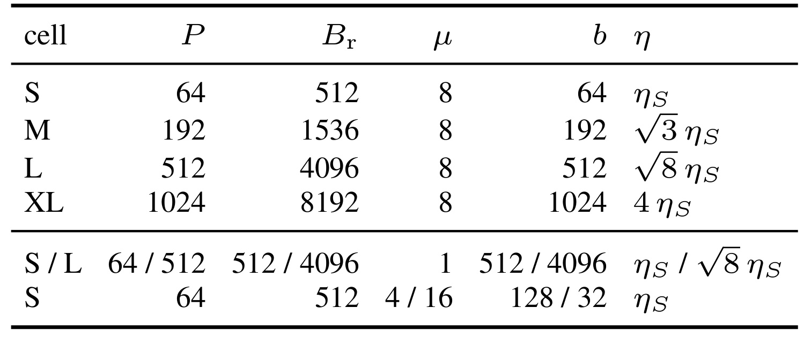
Table 1 完整保留了提示数、rollout 回答数、优化器步数以及单步回答数。小档六十四题乘八条回答是五百一十二条，八步拆分后每步仅六十四条；大档五百一十二题得到四千零九十六条，每步五百一十二条，学习率按平方根八倍放大。中档与超大档则分别是小档的三倍和十六倍生成批量。表格底部另外列出单步控制与每轮四步、十六步控制，提醒同一个生成批量可能对应完全不同的优化器批量。理解失效回归时要用单步回答数，理解生成预算时要用整轮回答数；省掉这个换算，会把“十二倍优化器步数差”误解释为“十二倍数据规模差”。
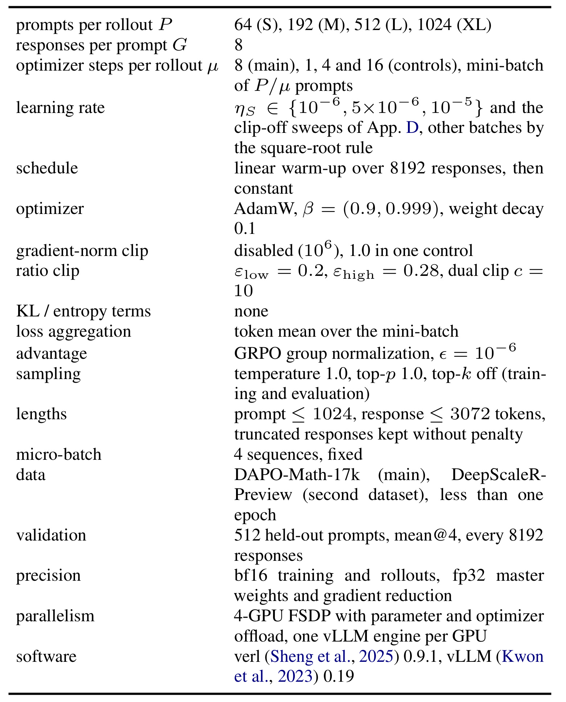
Table 3 记录了实验的完整公共条件，包括 AdamW 的动量、权重衰减、warm-up、微批量、令牌平均损失和并行实现。它解释了为什么本实验可作为受控的批量对照：除专门的控制组外，各档共享采样和优化器配置，训练与生成均使用混合精度，参数与梯度聚合保留相应高精度路径。截断回答保留且没有额外惩罚，这一点会影响崩溃时长度上限与有效梯度的解释。表里的固定四序列微批量还服务于第一步比率精确为一的数值条件；如果动态打包改变计算形状，在低精度下即便权重相同，也可能得到非一比率，从而污染“单步没有裁剪”的控制实验。
作者将失败首先定义为准确率跌到历史最好值的一半以下；若没有发生，再检测持续梯度范数异常：首次超过早期中位数四倍，并在后续八轮里至少三轮仍超阈值。都没触发的运行是右删失，训练预算仅提供失效样本数的下界。这个排序十分必要，因为附录存在准确率崩溃、梯度没有持续增大的“安静失效”，也存在 KL 突变之后回答全部顶到长度上限、梯度反而变成零的情形。不能把所有失败简单归为梯度爆炸，更不能把预算内未失败写成永远稳定。
3.2 学习率越激进，进展临界尺度越小
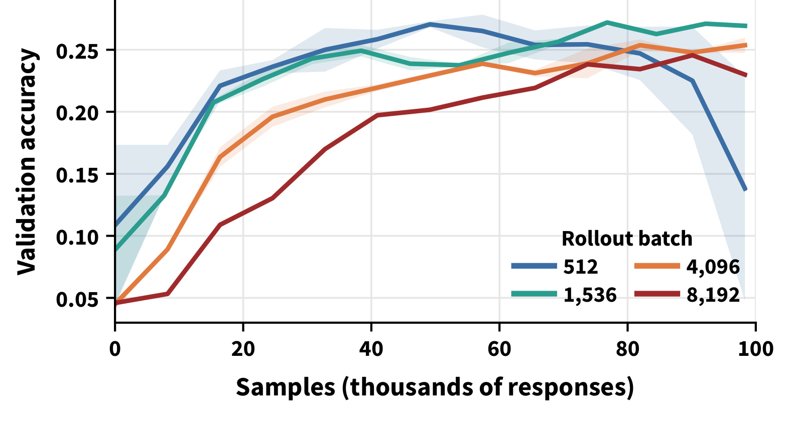
Figure 3 使用中等学习率族与每轮八步更新。五百一十二与一千五百三十六的曲线相当接近，继续增加到四千零九十六与八千一百九十二后，早期准确率爬升明显后移。这不是批量越小越好的一条直线，反而展示了一个近似平台区：中档批量既保留小档的进展速度，又减少轮次与更新次数。图的尾端小档下降、大档仍稳定，说明比较最终准确率会给出不同于早期目标样本成本的排序。作者据此把中档视为当前学习率下的较好固定选择，而不是预先宣告某个批量对所有配置最佳。
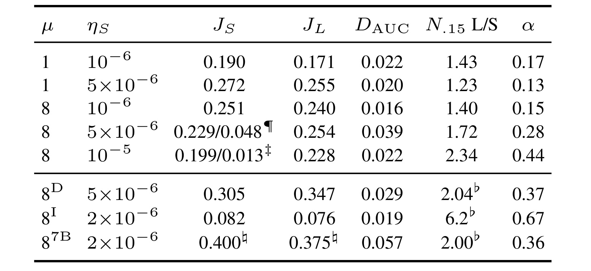
Table 2 中，默认八步配置达到百分之十五准确率的大档与小档样本成本比，从保守学习率的 1.40 升至中等学习率的 1.72，再升至最高学习率的 2.34；对应样本成本指数为 0.15、0.28、0.44。单步控制也存在 1.43 和 1.23 的比值，因此进展差距不要求裁剪激活。表中一些小批量最终准确率分列两个种子，是因为其中一个后期失效；不能把这两个数当成两个不同指标。跨数据或模型行还改用了特定准确率目标，七十亿模型数值取自四万九千条回答处，阅读横向比较时必须保留脚注，而不能把整列都解释成统一目标下的最终结果。
核心趋势是学习率提高会放大大批量的进展惩罚。作者按局部形式推得的临界生成批量，大致从九千条降到两千条回答；这与“学习率越高，容许而仍高效的长步越少”的曲率解释一致。所谓临界批量不是直接测到的神经网络硬边界，其数值来自曲线和拟合形式。实测简单梯度噪声尺度超过六万条回答，而优化器批量主要是六十四或五百一十二条，彼此相差很大；因此用“仍低于噪声尺度”无法否定本实验中的进展损失。
附录的低学习率控制进一步排除了裁剪是唯一原因。保守区间的裁剪令牌比例低于万分之二，在第一步没有任何令牌被裁剪；单步设置的大档仍需要约百分之三十五到五十更多回答达到百分之十五准确率，两个种子对的曲线距离约为 0.022 和 0.021，明显高于同配置种子噪声约 0.005。八步设置的曲线距离约为 0.016，目标样本数约三万对二万二千。这些数字不是说所有单步缩放结果都无效，而是说明近似不变性依赖学习率、批量范围与容忍带，先前某些实验中的约一个准确率百分点不能被升格成无条件承诺。
3.3 失效主要按消耗回答数对齐
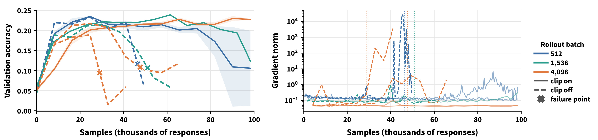
Figure 4 在相同学习率族下，左侧画准确率、右侧画梯度范数，用实线与虚线区分裁剪开关，颜色区分批量。关闭裁剪后，大档只经过七至十轮、五十六至八十步就出现梯度异常，小档却达到八十一轮、六百四十八步；但换算到回答数，两者都落在约三万到五万区间。这使“训练执行了多少更新就会失败”的解释很难成立。开启裁剪后曲线持续更久，且大档保护更明显；同时，关闭裁剪并没有抹平前期学习速度差异，所以失效保护与进展惩罚需要分别解释。
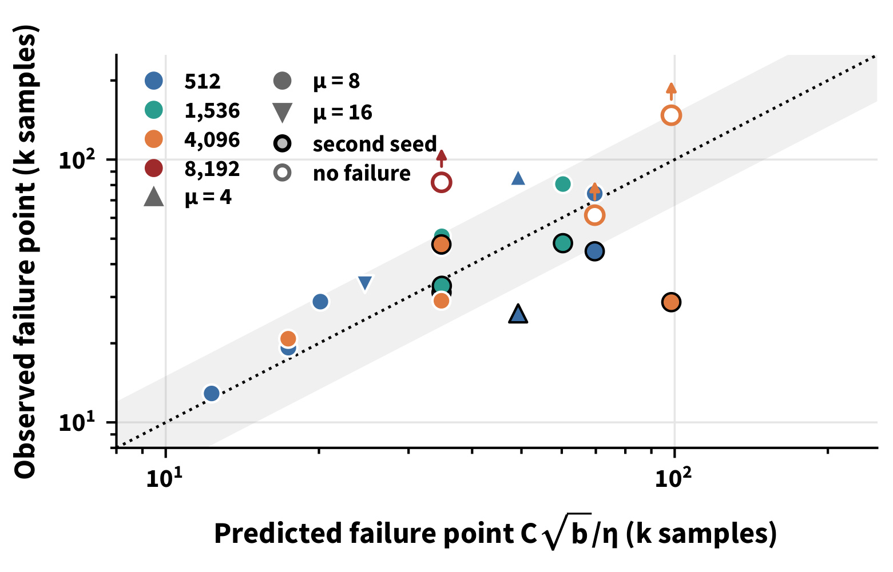
Figure 5 横轴是漂移关系给出的预测失效样本数，纵轴是实际观测值。颜色编码生成批量，形状编码每轮优化器步数，黑边表示第二个种子；空心且带箭头的点是右删失，表示真实失效时间至少大于图示预算。十八个已失效运行里，十四个落在预测值乘除一点五的灰色带内。这个拟合程度支持一个有用的尺度近似，同时保留了单次运行很大的变化。不能把箭头当成实际已失效点，也不能因大多数点靠近对角线就省略其余偏离点；它们正是这条定律不能作为精确计时器的直接证据。
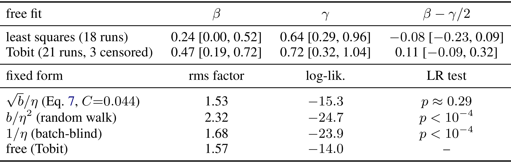
Table 4 给出只用十八个失效运行的最小二乘拟合，以及加入三个未失效运行的二十一运行删失似然拟合。前者批量指数约 0.24、学习率指数约 0.64，后者分别约 0.47 与 0.72；沿平方根规则的组合指数分别为负 0.08 与 0.11，百分之九十自助区间均包含零。漂移固定形式的似然比检验约为 0.29，随机游走与仅依赖学习率的形式都低于万分之一。这里的统计结果更支持漂移候选解释，但实际学习率指数约为零点七，并不精确等于理论的一；不能把“未拒绝固定形式”写成已经证明失效必由唯一漂移机制导致。
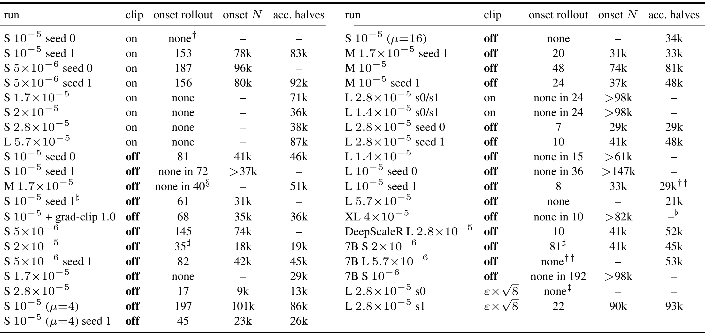
Table 5 保留了按梯度异常和按准确率减半定义的两列失效信息，因此可以看到它们并不总是同时出现。四步小批量两个种子的异常起点可以相差很多；有的运行准确率下降却没有梯度异常，有的崩溃后还恢复。超大批量在某段预算内没有满足严格减半，但仍可能已有明显衰退。表格中的大于号是下界，破折号是未观测到对应条件，不应填成零或认为完全无风险。作者据此把结论建立在跨运行的聚合缩放关系上，并规定准确率条件优先，这比挑一对对齐漂亮的曲线更能反映失效检测的不确定性。
这里还有一个关键鉴别逻辑：随机游走理论同样预测沿平方根规则的样本失效点近似不变，所以对齐本身只排除了某些批量无关机制。需要扫描学习率，才能利用它预测的二次学习率依赖与漂移预测的一次依赖作比较。二十一条运行覆盖三十二倍优化器批量和接近六倍学习率，正是为了形成这一鉴别。附录也做了梯度范数上限控制，小档加入一点零上限后仍在约三万六千回答失效，落在无上限种子的三万一千到四万六千范围内，说明结果并不只是主动取消梯度裁剪制造的异常。
3.4 裁剪的贡献是保护，放宽范围只能暂时提速
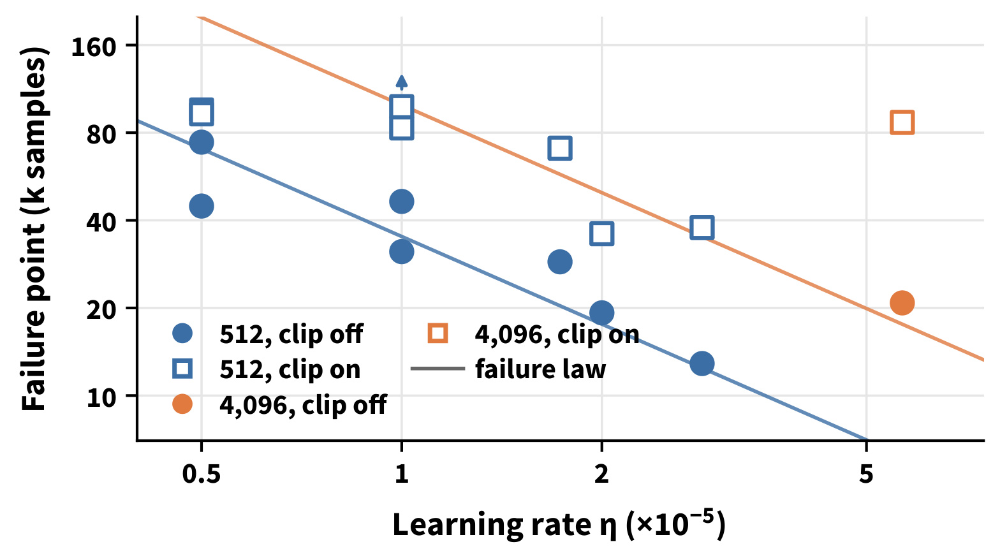
Figure 6 在学习率轴上比较大小两档，圆点是无裁剪，空方块是有裁剪，箭头继续表示预算内未失效。小档加入裁剪后的寿命约延长两倍，大档在特意提高学习率使其确实失效的比较中约延长四倍。默认大档的若干点只给出了失效时间下界，因此不能说它获得无限寿命，也不应在所有学习率上固定套用四倍。图支持“大批量从裁剪得到更多保护”，而非“批量增大自动稳定”：去掉裁剪后它仍沿相近的样本时钟失效，保护来自批量与比率传播共同改变的裁剪效果。
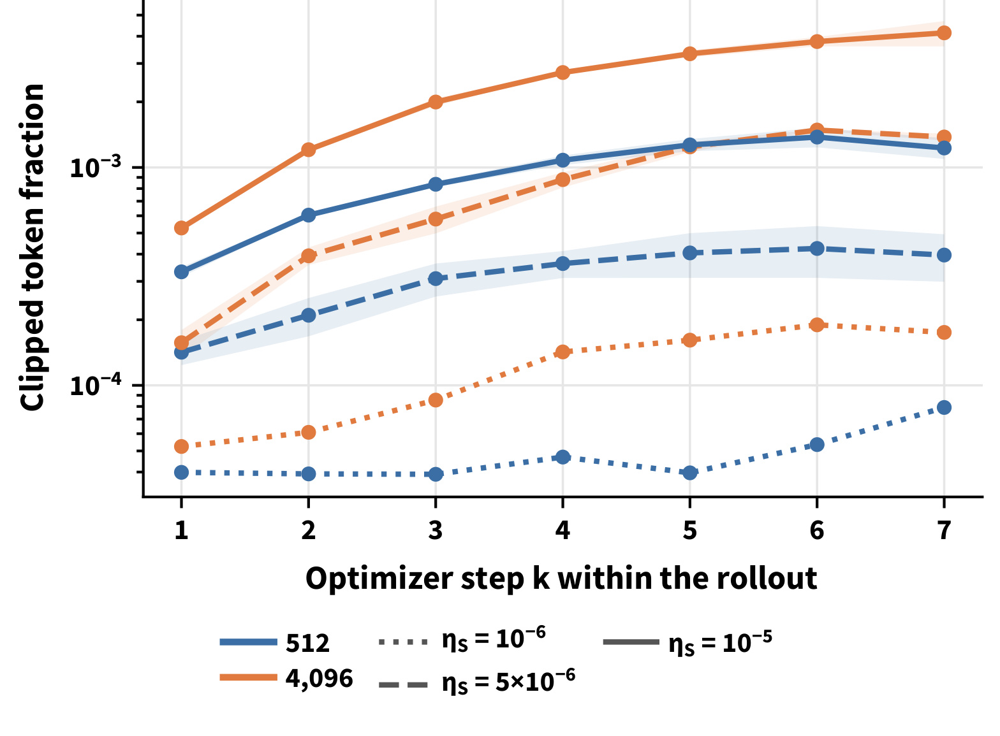
Figure 12 使用失效前的前四万九千条回答，避免把崩溃后的异常比率混入解释。横轴是同一 rollout 内的优化器步序号，纵轴是被裁剪令牌比例；三种线型表示不同学习率族。第一步不裁剪，之后两档比例都上升，大档相对小档的倍数由第一后续步的一点一至一点六倍，发展到第三步以后约二至四倍。这种逐步积累符合比率传播的解释，并且体现了多步设置的特殊性。单看训练全程平均裁剪比例会把步骤差异冲淡，误以为大档在采样瞬间就比小档拥有更大的偏差。
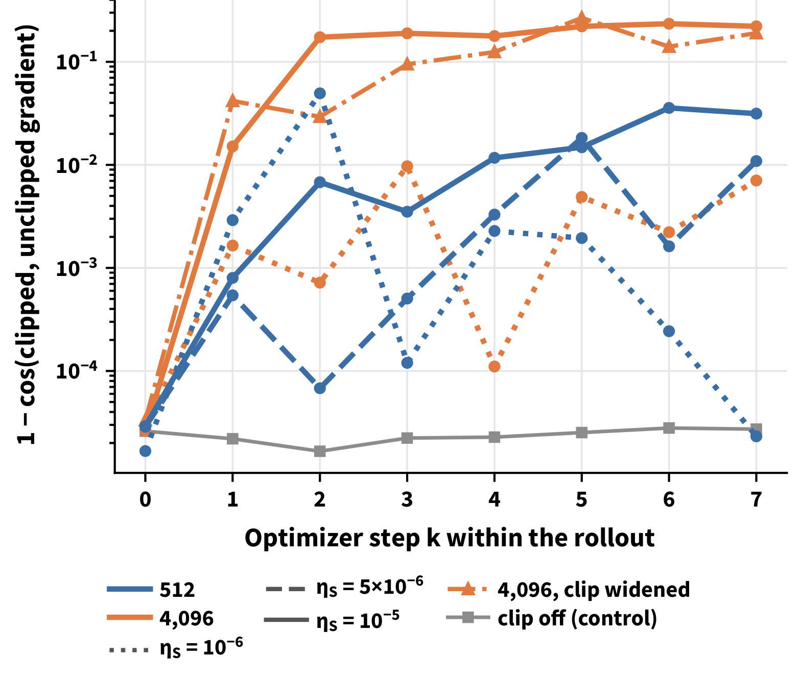
Figure 13 的纵轴是裁剪与不裁剪梯度间的一个减余弦相似度，数值越大表示裁剪越显著改变更新方向。高学习率大档从第二后续步起约达到零点二，相对小档约高六到五十倍。灰色无裁剪控制用于测量数值底噪，第一步应没有裁剪造成的旋转。重放让两档用相同数据、每次采用新 AdamW 状态，因此适合检验方向效应，但绝对裁剪比例比训练日志高约两倍，不能把重放里的比例直接当成在线训练测量。只有约百分之零点五令牌被裁剪，却能携带超过全梯度一半的范数，解释了为何很小的裁剪比例仍具有明显保护作用。
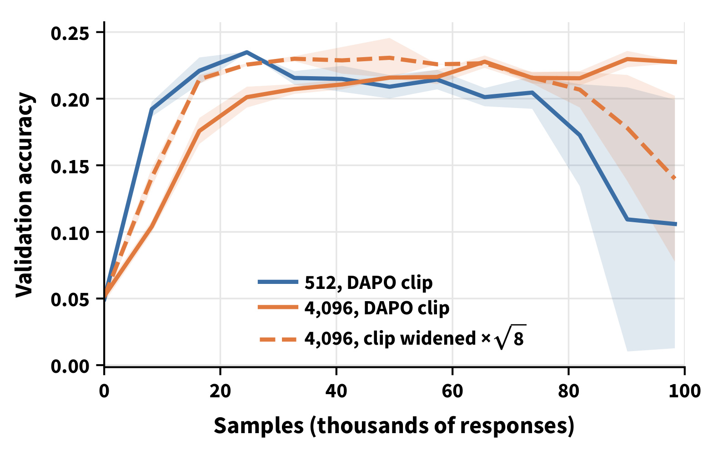
Figure 14 把大档对数空间的裁剪半径扩大平方根八倍，对应下上边界参数约为 0.468 和 1.01，而不是在线性比率空间随便乘同一倍数。大档达到百分之十五准确率的样本数从约一万四千降到一万，早期收益很明确；随后两个种子均衰退，其中一个约九万条回答崩溃，另一个最终约为 0.202，低于普通大档的约 0.23。扩大区间还使最后一步对数比率绝对值的高分位更大。它是提前放行更新、失去部分保护的交换，不能被解读成解决了大批量持续学习效率问题。
附录另举了小批量的反例：某个重放小批次仅万分之零点七的令牌被裁剪，梯度旋转却可达到 0.72。少数令牌携带特别强的梯度，会使“比例很低，裁剪影响可忽略”的经验判断失效。这也意味着实际复现需要同时记录裁剪令牌比例、被移除梯度的大小与方向、比率分位数。只监控一个占比阈值，不足以判断裁剪是否在帮助或伤害训练。实验在这里支持的是梯度贡献的不均匀分布，而不是根据每个被裁剪令牌的语义证明它一定有害。
3.5 跨数据、通用检查点与七十亿模型
第二数据集 DeepScaleR-Preview 上，大档达到对应目标的样本成本约为小档的 2.04 倍，指数为 0.37；但最终准确率大档约 0.347，高于小档约 0.305。七十亿数学模型在四万九千回答处小档约为 0.400、大档约 0.375，曲线距离约 0.057，对应目标样本成本比约二。它们共同支持进展方向的一致性，却也再次说明“样本效率更差”与“最后准确率更差”不是一回事。这些扩展多数只有一个种子，模型仍来自 Qwen 同一系列、任务仍是数学，不足以推出代码或长程 Agent 任务的统一缩放关系。
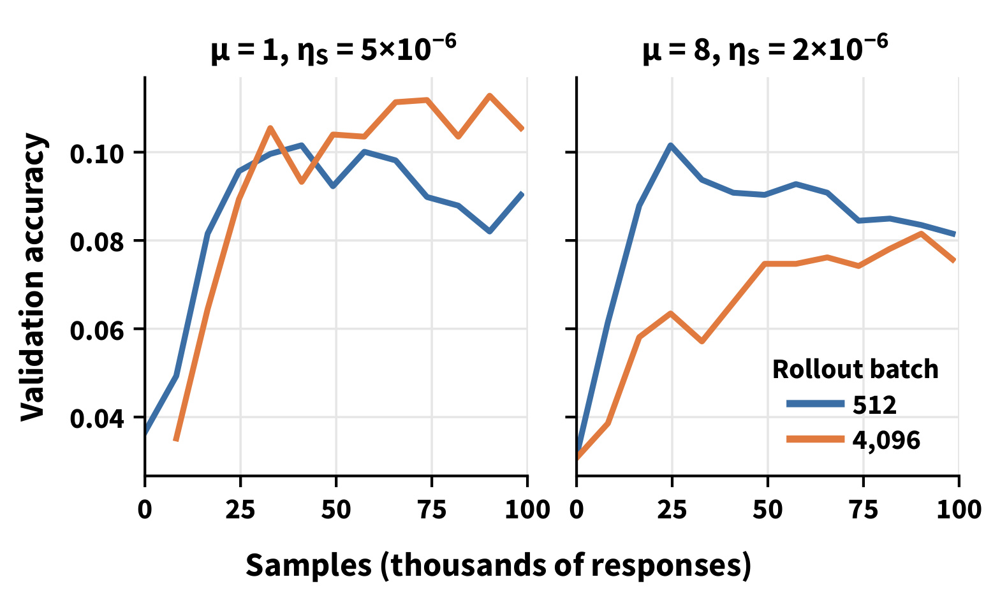
Figure 15 左右分别为单步和八步 rollout，使用不同学习率族，以适应通用指令模型更敏感的稳定区间。八步小档在约一万四千回答达到百分之八准确率，大档需要约八万六千，成本比约 6.2，指数约 0.67。小档在各次八步评估中领先，但两档最终差距缩小。附录说明在相同学习率下，该检查点的单步 KL 约大十倍，比率分散约大二点七倍，熵也更高，因此不能直接复制数学模型学习率。左图的单步早期优势与右图的持续差距，都说明进展损失有一定跨检查点稳定性，而不是说所有阶段都保持同样幅度。
七十亿模型的失效轮数相差约六倍，消耗回答数却只差约一点三倍，提供了另一个样本时钟对照。其漂移关系使用模型特定常数；即使规模变化后趋势相同，也不意味着可把小模型拟合得到的常数直接填入大模型训练。主实验使用四张 RTX A6000，七十亿模型使用四张 H100，全部实验连同前期探索与重放约两千 GPU 小时。不同硬件下的这些曲线不能直接拼成精确墙钟收益表，作者也没有据此给出生产吞吐提升的统一百分比。
3.6 批量渐增能兼顾前期进展与后期保护
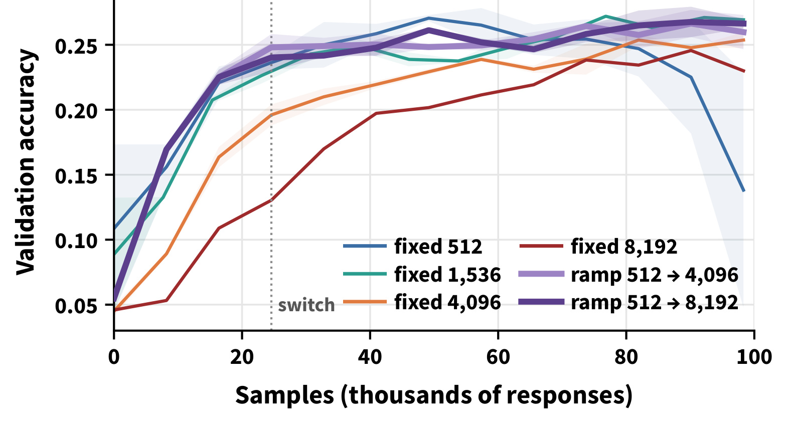
Figure 7 以五百一十二批量起步，消耗约二万四千六百回答后切到四千零九十六或八千一百九十二，两种渐增各有两个种子。各方案都在相同总回答预算上比较，切换后约四分之三样本由大批量生成。渐增曲线显著高于从头固定大批量，并接近较好的固定批量方案，说明早期的样本效率优势可以保留到后续阶段。它没有证明一定比最佳固定中档更准，也没有提供等墙钟预算下的胜率；切换伴随优化器重置与 warm-up，公平复现必须把这两个动作和早期样本成本一起计入。
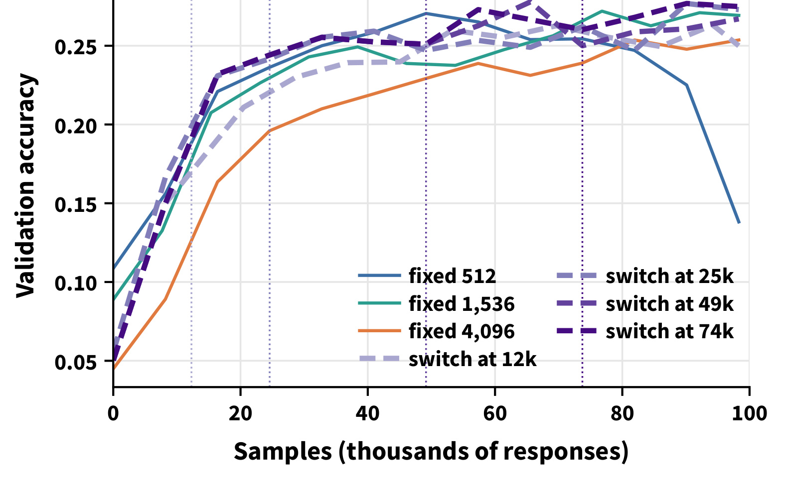
Figure 16 沿同一条小档初始轨迹，分别在约一万二千、二万五千、四万九千、七万四千回答时切换到大档，从而减少第一阶段种子差异的干扰。后二者及二万五千切换总体表现相近，最早切换则牺牲了一部分小档进展优势。各第二阶段都重置优化器状态并进行一轮预热，第一次评估与切换前轨迹的差距在约 0.016 内。因此结果支持一段相对宽松的切换窗口，前提是及时避开小档失效；它没有找到能跨模型直接复用的唯一最优时刻，固定回答点本身仍依赖学习率、模型和训练数据。
调度的现实含义是先测出“再放大是否明显增加目标样本成本”的平台区，再根据吞吐需求决定是否需要跨过它。本实验中，一千五百三十六条回答的固定档位已接近小档的样本效率且不失效，未必必须采用渐增；渐增是对确实需要更高生成并行度的情况提供折中。若复现只比较固定小档、固定大档和渐增，却遗漏固定中档，就可能把简单选择合适批量的收益夸大成复杂调度收益。还需要把相同回答数、相同令牌数和相同墙钟预算分别报告，才知道前期小档多轮采样的系统代价是否抵消后期收益。
4. 总结
本文最有价值的认识是把三个容易混淆的问题拆开：平方根缩放保持哪一种量、策略移动能换来多少改善、系统能允许移动多久。噪声主导与局部二次近似下，同样的样本数得到相近一阶漂移，但大批量采用更少、更长的步，会增加平均位移的曲率损失；失效阈值假设又预测无裁剪时相近样本数触发失效。裁剪对大批量更强，因此它可能前期进展慢，却后期更稳定、最终更好。把这套关系放到训练仪表盘里，应同时显示目标准确率所需回答数、当前最好准确率、衰退幅度和裁剪/比率分布，而不是只盯最后一个验证点。
证据支持的是受控 GRPO 数学训练的尺度关系，应用时有至少四个实质限制。第一，所有模型属于 Qwen 系列，尽管涵盖数学和通用检查点及七十亿规模，任务仍主要是数学；代码验证、工具调用、多轮环境与广告推荐奖励可能具有完全不同的梯度噪声和信用分配。第二，理论的梯度方向、噪声主导、局部曲率与近似新鲜小批次都不是全程保证，真实多步数据陈旧性与 Adam 状态可能改变推导适用范围。第三，失效定律建立在经验阈值假设上，种子间波动大，实际指数与理论值也并非完全一致；“样本时钟”只能用于带不确定性的预警。第四，作者主要衡量回答样本效率，没有证明等令牌或等墙钟预算收益；不同长度、设备和分布式实现会改变实际成本。第五，渐增同时重置优化器与预热，尚需专门消融这些动作，避免把组合收益全记在批量变化名下。
可以直接迁移的，是试验设计而非未经验证的超参数。一次小规模扫描同时保留固定小、中、大三个批量，先在相同回答预算上估计达到多个目标的样本成本，再扫描学习率观察临界尺度是否移动；对裁剪分别做关闭、默认、放宽控制。若自己的模型确实显示早期小档领先且后期容易衰退，再考虑前期小档后期大档的组合，而不是一开始就把“平方根规则”当成免调参保证。生产方案还应保留自身的 KL、奖励过滤和异步采样作为新增控制条件，不能为复现简化实验而默认移除所有保护。
后续跟进有三项具体问题。一是跨模型与任务复测，尤其检验 Agent 多轮轨迹在同一回答计量下是否仍出现双时钟，必要时换成环境步或有效令牌作为成本。二是补充渐增阶段的优化器状态消融，把仅改批量、仅重置、重置加预热分开，并报告等墙钟、等生成令牌的效率；这样才能判断系统吞吐是否足以补偿初期多轮更新。三是改进失效风险估计，汇总更多随机种子与删失运行，监控均值漂移方向是否持续稳定，以及裁剪掉的梯度份额是否领先于准确率恶化。代码入口本轮未成功核验，复现前还需确认其配置、提交版本与日志是否覆盖论文对照，不能把论文声称公开代码等同于本轮已经验证实现。